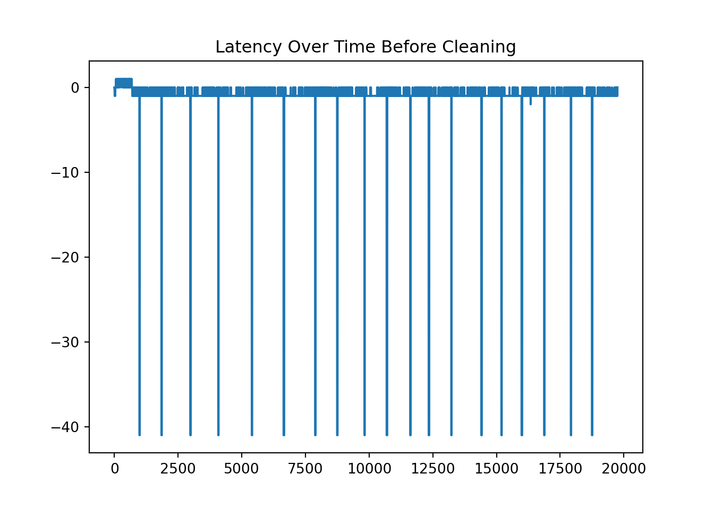
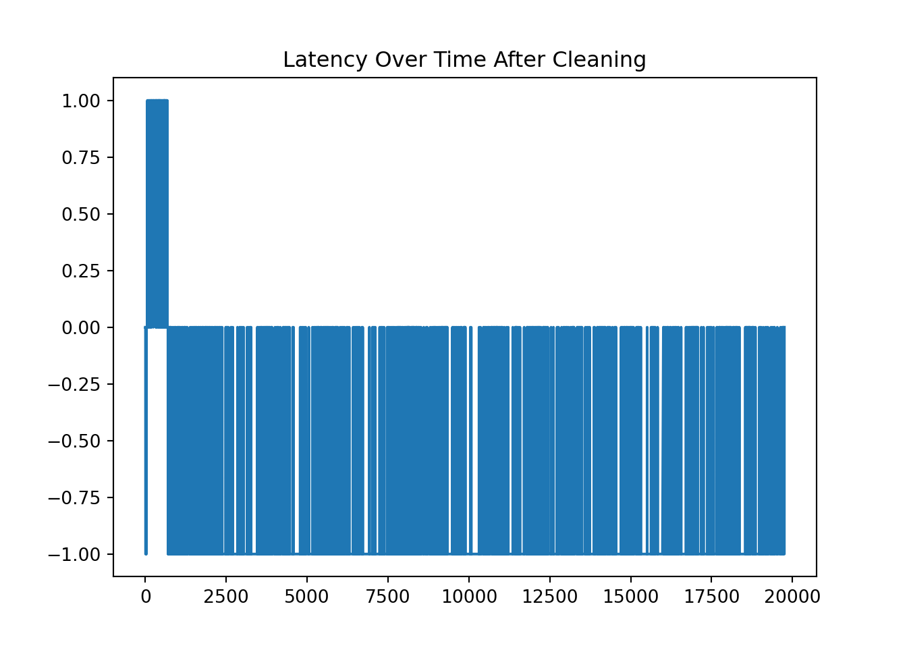

Note: 이 페이지는 키움 API를 통해 Real Time Tick Data를 받아온 후 데이터를 클리닝 하는 과정을 보여주고 있습니다. 오류 및 문의사항은 metrics@kakao.com 으로 메일주시면 감사하겠습니다
데이터 자체에 대한 질문과 데이터 제공에 관한 문의는 000 으로 메일 주시면 감사하겠습니다
R code 블럭과 Python code 블럭은 다음과 같이 색깔로 구분하겠습니다. 결과창은 동일하게 Ivory 색 블럭으로 표시됩니다.
# "이것은 R 코드 입니다."# "이것은 Python 코드 입니다."Package
library(dplyr)
library(DT)
library(reticulate) # Python
#py_install(packages = "matplotlib")
#py_install(packages = "pandas")
#py_install(packages = 'dfply')
options(scipen=999)
options(max.print = 99999999)
options(digits=10)Import Data
wd = "G:/공유 드라이브/Project_TBD/Stock_Data/real_time/kiwoom_stocks/2021-01-12"
wd2 = "/Volumes/GoogleDrive/공유 드라이브/Project_TBD/Stock_Data/real_time/kiwoom_stocks/2021-01-12"
fn = list.files(path = wd2,
pattern = '.*stocks_trade.*.*_15.*\\.csv') # 마지막 30분 틱데이터 가지고오기
path = paste(wd2,fn,sep = '/')
data = readr::read_csv(file = path,
col_names = c('code','trade_date','timestamp','price','open','high','low',
'size','cum_size','ask1','bid1'))
sum(is.na(data))## [1] 0import numpy as np
import matplotlib.pyplot as plt
import pandas as pd
from datetime import datetime, timedelta
#py_install(packages = "matplotlib")
#py_install(packages = "pandas")
pd.options.display.float_format = '{:.4f}'.format
df_py = r.data
df_py.head()## code trade_date timestamp ... cum_size ask1 bid1
## 0 251270 150000.0000 20210112150000.0234 ... 484291.0000 124500.0000 124000.0000
## 1 014680 150000.0000 20210112150000.0312 ... 104757.0000 187500.0000 187000.0000
## 2 182400 150000.0000 20210112150000.0312 ... 668275.0000 19700.0000 19650.0000
## 3 139480 150000.0000 20210112150000.0312 ... 1076253.0000 183000.0000 182500.0000
## 4 225220 150000.0000 20210112150000.0312 ... 64880.0000 25600.0000 25500.0000
##
## [5 rows x 11 columns]Contents
0. Necessity of making precise time index
거래가 일어난 혹은 호가창 정보가 바뀔때 마다 바뀌는 시간에 대한 정보가 저장되어 다른 가격 정보들과 함께 API로 데이터를 받아온다. 하지만 Kiwoom 에서 제공하는 데이터의 시간 정보는 ‘second’단위이기 때문에 1초에 몇 적게는 몇십번 많게는 몇 백개 몇 천개씩 발생하는 Tick 데이터 가공하는데 ’milisecond’ 단위가 필요한 경우가 많다. 정확하게 milisecond 까지 아는 것도 중요하지만, 당장 Kiwoom 에서 제공하는 시간 정보가 정확한지에 대한 확인도 필요하다. 이러한 이유에서 우리는 키움 API에서 데이터가 live streaming으로 제공될때 시간을 내부적으로 local system time을 기록하여 그 둘을 비교해보고자 한다. 키움 API에서 제공하는 시간정보가 맞다는 가정하에 latency를 계산해서 특이한 점은 없는지 살펴보자.
1. Filter for a certain Stocks [특정주식으로 필터링 하기]
- KOSPI Code for Samsung Electronics is ‘005930’
ss = df_py[df_py.code == '005930'].reset_index(drop=True)
ss.head()## code trade_date timestamp ... cum_size ask1 bid1
## 0 005930 150000.0000 20210112150000.0820 ... 43854436.0000 89500.0000 89400.0000
## 1 005930 150000.0000 20210112150000.1484 ... 43854437.0000 89500.0000 89400.0000
## 2 005930 150000.0000 20210112150000.1562 ... 43854461.0000 89500.0000 89400.0000
## 3 005930 150000.0000 20210112150000.1953 ... 43854462.0000 89500.0000 89400.0000
## 4 005930 150000.0000 20210112150000.3398 ... 43854466.0000 89500.0000 89400.0000
##
## [5 rows x 11 columns]2. Use time object in python
Delete rows where “second” does not lie between 0 and 59.
Substring the timstamp to get each time component.
# Task 1
ss = ss[ss['timestamp'].apply(lambda x: int(str(int(x*1000000))[12:14])) < 60 ]
# Task4
ss = ss.assign( microsecond = ss['timestamp'].apply(lambda x: str(int(x*1000000))[14:20]),
second = ss['timestamp'].apply(lambda x: str(int(x*1000000))[12:14]),
minute = ss['timestamp'].apply(lambda x: str(int(x*1000000))[10:12]),
hour = ss['timestamp'].apply(lambda x: str(int(x*1000000))[8:10]),
day = ss['timestamp'].apply(lambda x: str(int(x*1000000))[6:8]),
month = ss['timestamp'].apply(lambda x: str(int(x*1000000))[4:6]),
year = ss['timestamp'].apply(lambda x: str(int(x*1000000))[0:4]))
ss.head()## code trade_date timestamp price ... hour day month year
## 0 005930 150000.0000 20210112150000.0820 89400.0000 ... 15 12 01 2021
## 1 005930 150000.0000 20210112150000.1484 89500.0000 ... 15 12 01 2021
## 2 005930 150000.0000 20210112150000.1562 89400.0000 ... 15 12 01 2021
## 3 005930 150000.0000 20210112150000.1953 89500.0000 ... 15 12 01 2021
## 4 005930 150000.0000 20210112150000.3398 89400.0000 ... 15 12 01 2021
##
## [5 rows x 18 columns]- Transform data type to str to use substring to make the format like “%Y-%m-%d %H:%M:%S.%f”
ss['time'] = ss.apply(lambda x: datetime(
year = int(x['year']),
month = int(x['month']),
day = int(x['day']),
hour = int(x['hour']),
minute = int(x['minute']),
second = int(x['second']),
microsecond = int(x['microsecond'])).strftime("%H:%M:%S.%f")[:-3], axis=1)
ss['latency'] = ss['timestamp'].apply(lambda x: int(str(int(x*1000000))[8:14])) - ss['trade_date']
ss1 = ss[['time','hour','minute','second', 'price','size','ask1','bid1','latency']]
ss1.head(10)## time hour minute second ... size ask1 bid1 latency
## 0 15:00:00.082 15 00 00 ... 130.0000 89500.0000 89400.0000 0.0000
## 1 15:00:00.148 15 00 00 ... 1.0000 89500.0000 89400.0000 0.0000
## 2 15:00:00.156 15 00 00 ... 24.0000 89500.0000 89400.0000 0.0000
## 3 15:00:00.193 15 00 00 ... 1.0000 89500.0000 89400.0000 0.0000
## 4 15:00:00.340 15 00 00 ... 4.0000 89500.0000 89400.0000 0.0000
## 5 15:00:00.365 15 00 00 ... 100.0000 89500.0000 89400.0000 0.0000
## 6 15:00:00.488 15 00 00 ... 32.0000 89500.0000 89400.0000 0.0000
## 7 15:00:00.566 15 00 00 ... 5.0000 89500.0000 89400.0000 -1.0000
## 8 15:00:00.590 15 00 00 ... 78.0000 89500.0000 89400.0000 -1.0000
## 9 15:00:00.652 15 00 00 ... 2.0000 89500.0000 89400.0000 -1.0000
##
## [10 rows x 9 columns]3. Calculate latency and clean it [레이턴시 계산 및 정리]
*Calculate the latency by substracting the tiem provided by Kiwoom dataset and self-recorded time at the moment of processing the data delivered through the Kiwoom API.
# Task 2 & 3
print(ss1.latency.value_counts())## -1.0000 17471
## 0.0000 1519
## 1.0000 427
## -41.0000 332
## -2.0000 1
## Name: latency, dtype: int64plt.plot(ss1.latency)
plt.title('Latency Over Time Before Cleaning')
- Check the time where large discrepancy happened!
- It turns out that when the second of time equal 59, it has large latency. It might not be case for the other day, which has to be checked.
ss1[ss1.latency == -41].groupby(['hour','minute','second'])['latency'].agg(['mean','sum','count'])## mean sum count
## hour minute second
## 15 00 59 -41.0000 -615.0000 15
## 01 59 -41.0000 -697.0000 17
## 02 59 -41.0000 -615.0000 15
## 03 59 -41.0000 -574.0000 14
## 04 59 -41.0000 -697.0000 17
## 05 59 -41.0000 -1066.0000 26
## 06 59 -41.0000 -656.0000 16
## 07 59 -41.0000 -779.0000 19
## 08 59 -41.0000 -410.0000 10
## 09 59 -41.0000 -984.0000 24
## 10 59 -41.0000 -656.0000 16
## 11 59 -41.0000 -943.0000 23
## 12 59 -41.0000 -451.0000 11
## 13 59 -41.0000 -861.0000 21
## 14 59 -41.0000 -656.0000 16
## 15 59 -41.0000 -1066.0000 26
## 16 59 -41.0000 -533.0000 13
## 17 59 -41.0000 -574.0000 14
## 18 59 -41.0000 -779.0000 19- Delete where time difference goes beyond one second between Kiwoom api time and self-recorded time. In other words, we allow latency +/- one second at maximum.
ss1 = ss1[abs(ss1.latency) <=1]
print(ss1.latency.value_counts())## -1.0000 17471
## 0.0000 1519
## 1.0000 427
## Name: latency, dtype: int64ss1.head()## time hour minute second ... size ask1 bid1 latency
## 0 15:00:00.082 15 00 00 ... 130.0000 89500.0000 89400.0000 0.0000
## 1 15:00:00.148 15 00 00 ... 1.0000 89500.0000 89400.0000 0.0000
## 2 15:00:00.156 15 00 00 ... 24.0000 89500.0000 89400.0000 0.0000
## 3 15:00:00.193 15 00 00 ... 1.0000 89500.0000 89400.0000 0.0000
## 4 15:00:00.340 15 00 00 ... 4.0000 89500.0000 89400.0000 0.0000
##
## [5 rows x 9 columns]plt.plot(ss1.latency)
plt.title('Latency Over Time After Cleaning')
4. Get Trade Direction Indicator
If price is large than midprice, then it is buyer-initiated. If price is less than midprice, then it is seller-initated. It is tricky if price is same as midprice. In that case, we use the following rule.
The tick rule is the most commonly used level-1 algorithm. This rule is rather simple and classifies a trade as buyer-initiated if the trade price is above the preceding trade price (an uptick trade) and as seller-initiated if the trade price is below the preceding trade price (a downtick trade). If the trade price is the same as the previous trade price (a zero-tick trade), the rule looks for the closest prior price that differs from the current trade price. Zero-uptick trades are classified as buys, and zero-downtick trades are classified as sells.
The rule above can be simply implemented through the code below.
ss = ss.assign(spread = ss['ask1'] - ss['bid1'],
mid = (ss['bid1'] + ss['ask1'])*.5,
ind = 0,
price1 = ss['price'].shift(1, fill_value=0),
price2 = ss['price'].shift(2, fill_value=0)
)
buy = ((ss['price'] > ss['mid']) |
((ss['price'] == ss['mid']) & (ss['price'] > ss['price1'])) |
((ss['price'] == ss['mid']) & (ss['price'] == ss['price1']) & (ss['price'] > ss['price2'])))
ss.loc[buy, 'ind'] = 1
ss.loc[~buy, 'ind'] = -1
ss1 = ss[['time', 'price','size','ask1','bid1','ind','spread']]
ss1.head(5)## time price size ask1 bid1 ind spread
## 0 15:00:00.082 89400.0000 130.0000 89500.0000 89400.0000 -1 100.0000
## 1 15:00:00.148 89500.0000 1.0000 89500.0000 89400.0000 1 100.0000
## 2 15:00:00.156 89400.0000 24.0000 89500.0000 89400.0000 -1 100.0000
## 3 15:00:00.193 89500.0000 1.0000 89500.0000 89400.0000 1 100.0000
## 4 15:00:00.340 89400.0000 4.0000 89500.0000 89400.0000 -1 100.0000We will discuss what to do more with using trading indicator value along with other variables extracted from tick data.
Source
- 데이터 provided by 00 Team
- http://dee.uib.es/digitalAssets/234/234006_Pascual.pdf